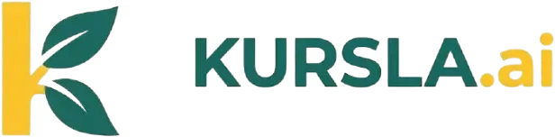
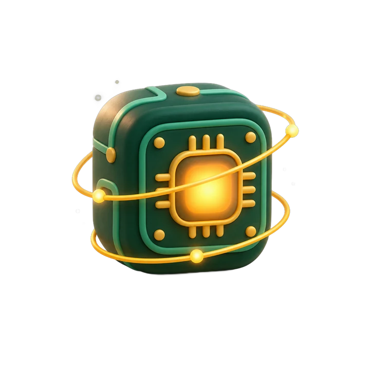
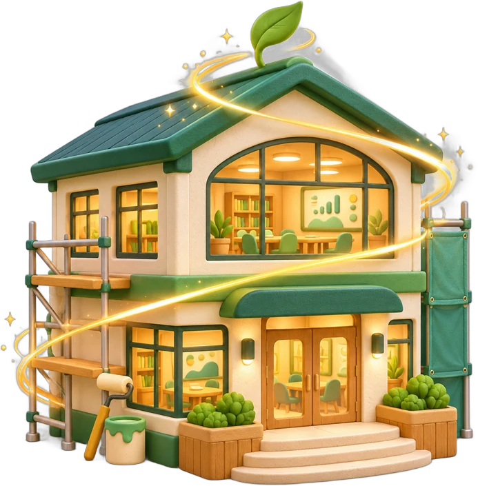
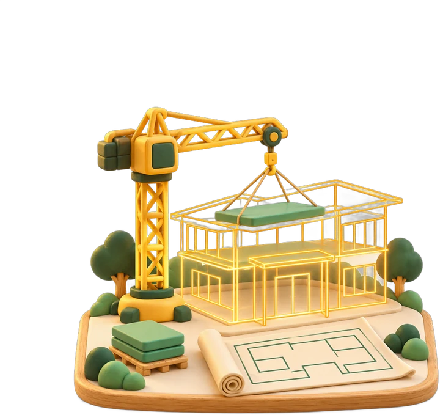
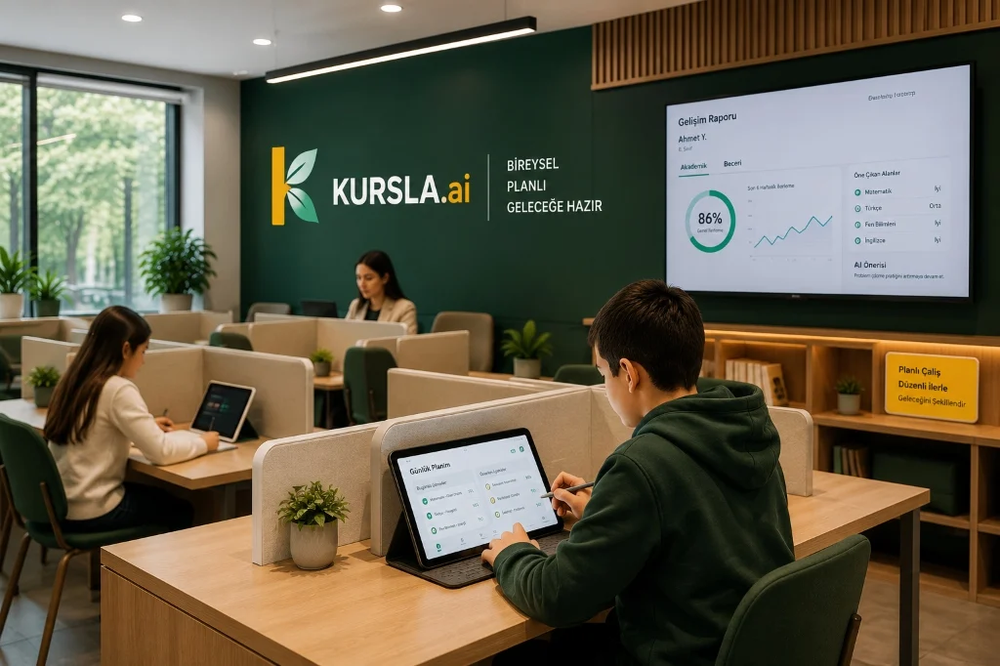

Kendi markanız
Sistem sizin adınız, logonuz ve renklerinizle çalışır; KURSLA.ai arka planda altyapı olarak kalır.

Giriş Yap Başvuru Yap

AI-LA altyapısıyla bireysel öğrenme
Bir kata dokunun
Modelimiz
Marka, teknoloji ve eğitim modeli ayrı ürünler değil; merkezinizin tamamını çalıştıran tek sistemdir.
Sistem sizin adınız, logonuz ve renklerinizle çalışır; KURSLA.ai arka planda altyapı olarak kalır.

Öğrenciyi tanıyan, planını kuran ve öğretmene aksiyon öneren yapay zekâ altyapısı.
Bireysel öğrenme müfredatı, öğretmen rolleri ve günlük işleyişin tanımlı olduğu işletim düzeni.
Nasıl çalışır?
Ortalama sekiz haftada tamamlanan, tanımlı ve baştan sona destekli bir geçiş.
Kapasite, kadro ve bölge potansiyeli birlikte değerlendirilir.
AI-LA altyapısı, içerik erişimi ve bireysel çalışma düzeni kurulur.
Yönetici ve öğretmenler yeni modelde uygulamalı olarak eğitilir.
Veli tanıtımı ve sürekli operasyon desteğiyle işleyiş devam eder.
Öğrenci tarafı
Kaynaklar haritayı güncelliyor
Paneller
Kendi markanız
Markayı biz vermiyoruz. KURSLA.ai, white label altyapısıyla kendi markanızı yapay zekâ destekli bir öğrenme merkezine dönüştürür.

Adınız, kadronuz ve düzeniniz aynı kalır; yapay zekâ altyapısı ve mentörlük modeli sizin markanızla devreye girer.
Mevcut merkezim için başvur
Eğitim sektörüne yeni giriyorsanız, sistemi ve eğitim modelini ilk günden kendi markanızla doğru kurmanız için yanınızdayız.
Yeni merkez için başvurUygulama modeli

Ek donanım veya tadilat gerekmez; sistem mevcut düzeninizin üzerine kurulur.

Her öğrencinin planını yapay zekâ kurar, öğretmen mentör olarak takip eder.

Yönetici, öğretmen ve öğrenci aynı sistemi kendi ekranından izler; veliye düzenli bilgilendirme gider.

SSS

Kısa bir bilgi bırakın; ekibimiz bölge analiziyle birlikte sizinle iletişime geçsin.